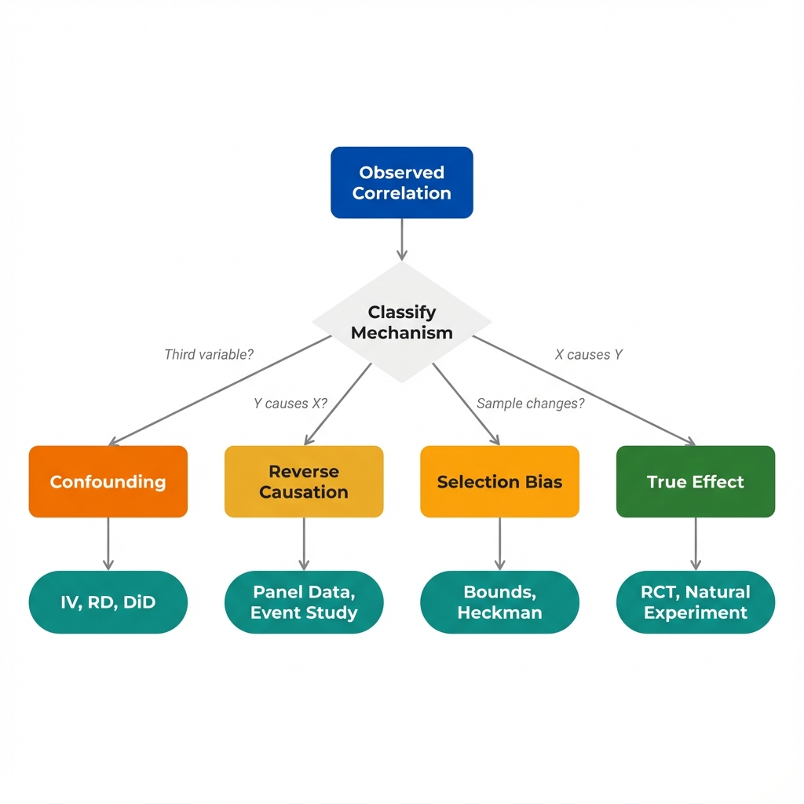

The Problem
You observe a correlation between X and Y. Someone asks, "Why might this be?" You list several possible explanations. (Scenario is illustrative.)
"Counties with community health worker (CHW) programs have lower hospitalization rates. What explains this correlation?"
Possible Explanations
- 1 CHWs prevent hospitalizations. The program itself reduces emergency visits through care coordination and patient education.
- 2 Well-organized counties do both. Counties with strong public health infrastructure implement CHW programs AND have lower hospitalization rates for unrelated reasons.
- 3 Low hospitalizations enable CHW programs. Counties with fewer emergencies have more capacity to implement preventive programs.
- 4 Sick patients leave CHW counties. People who need more hospital care move to counties with better hospital access, leaving CHW counties with healthier populations.
Next: Before we can match explanations to designs, we need to classify them. Each type of causal mechanism requires a different research strategy.
Mechanism Types
Causal explanations fall into four categories. Each represents a different causal structure with different implications for research design.
Confounding
Key question: Is there a common cause driving both X and Y?
Reverse Causation
Key question: Did Y happen before X, or could Y have caused X?
Selection Bias
Key question: Does being in the sample depend on X, Y, or both?
True Causal Effect
Key question: After ruling out alternatives, does X genuinely cause Y?
Why Classification Matters
Each mechanism type requires a different research strategy:
- Confounding requires finding variation in X that is independent of the confounder
- Reverse causation requires establishing timing or finding X variation that could not be caused by Y
- Selection bias requires either changing the sample definition or modeling the selection process
- True effects can only be confirmed by ruling out the alternatives
Next: How do you classify an explanation? Use the interactive decision tree to categorize any causal story.
Classifier Tool
Use this decision tree to classify any causal explanation. Answer each question based on the mechanism being proposed.
This explanation proposes a third factor that causes both the treatment and the outcome. The observed correlation between X and Y may be entirely spurious.
Recommended Design Strategy
Find variation in X that is independent of the confounder. Consider instrumental variables, regression discontinuity, or natural experiments where the confounder does not influence treatment assignment.
This explanation suggests the outcome influences the treatment, not the reverse. The arrow points the wrong direction.
Recommended Design Strategy
Establish timing with panel data, use leads and lags, or find treatment variation that occurred before the outcome could have influenced it. Consider Granger causality tests or event studies.
This explanation involves sample composition changing based on treatment, outcome, or both. The correlation may exist only in the observed sample.
Recommended Design Strategy
Redefine the sample to avoid conditioning on post-treatment variables, model the selection process explicitly, or use bounds analysis to estimate the range of possible effects.
This explanation proposes that X genuinely causes Y. To confirm, you must rule out confounding, reverse causation, and selection bias.
Recommended Design Strategy
Design studies to rule out each alternative mechanism. Use experimental or quasi-experimental methods that create as-if-random variation in X. The effect is identified only after alternatives are eliminated.
Next: Once you have classified each explanation, match it to a research design. Different mechanisms require different methods.
Design Matching
Each mechanism type has research designs suited to testing it. The table below maps classifications to recommended approaches.
| Mechanism | Design Approach | What It Does |
|---|---|---|
| Confounding |
Instrumental Variables
Uses a variable that affects X but not Y directly
|
Isolates variation in X independent of confounders |
| Confounding |
Regression Discontinuity
Compares units just above/below a threshold
|
Creates as-if-random assignment near cutoff |
| Confounding |
Difference-in-Differences
Compares changes in treated vs. control groups
|
Removes time-invariant confounders |
| Reverse Causation |
Panel Data with Lags
Uses past X to predict future Y
|
Establishes temporal precedence |
| Reverse Causation |
Event Study
Tracks outcomes before and after treatment
|
Shows Y was flat before X changed |
| Reverse Causation |
Granger Causality
Tests if past X predicts future Y beyond Y's own history
|
Distinguishes which variable leads |
| Selection Bias |
Bounds Analysis
Estimates range of effects under different assumptions
|
Shows how much selection could matter |
| Selection Bias |
Heckman Selection Model
Jointly models selection and outcome
|
Corrects for non-random sample |
| Selection Bias |
Intent-to-Treat Analysis
Analyzes by initial assignment, not actual treatment
|
Avoids conditioning on post-treatment behavior |
| True Effect |
RCT (Gold Standard)
Randomly assigns treatment
|
Eliminates all confounding by design |
| True Effect |
Natural Experiment
Exploits as-if-random variation from real-world events
|
Approximates random assignment |
Next: The key insight ties it all together. Classification is the first step; the goal is identification.
Key Insight
Classifying causal mechanisms is not the end goal. It is the first step toward designing research that can distinguish between competing explanations.

Classification transforms a list of possible explanations into a research strategy. Each mechanism type maps to designs that can test it.
The Classification-to-Design Workflow
The economist's approach to observational data follows a systematic process:
- List: Write down every plausible explanation for the observed correlation
- Classify: Sort each explanation into confounding, reverse causation, selection, or true effect
- Match: Identify research designs that can distinguish between the classified mechanisms
- Design: Choose the design that addresses the most plausible threat given available data
- Acknowledge: Be explicit about which threats your design cannot address
Questions That Drive Better Research
Key Takeaway
Correlation invites multiple explanations; research design narrows them down. A statistics-focused approach would be to list possible confounders and control for them statistically. Economics classifies explanations by type and designs studies that can rule out each category. The goal is not to find the "right" adjustment, but to find variation in treatment that is independent of the threats you have classified. This is what economists mean by "identification strategy."